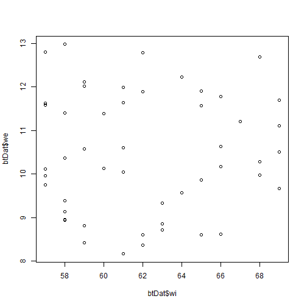
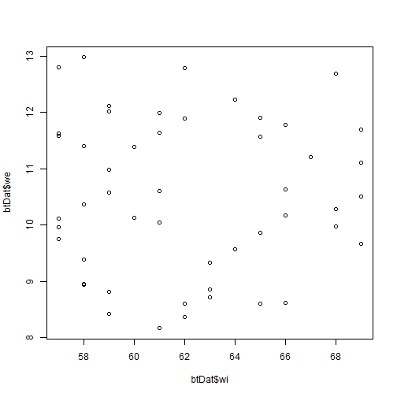

BL6024 - Quantitative Skills for Biologists using R
Lecture 01: Introduction to R and R Studio
Why R?
- It's free
- Customizable, extensible
- An abundance of libraries
- Full programming language
- Collaboration with colleagues
- Support for reproducible analysis
- Methods of publishing code and results
And much more.
What is R?
R refers to the progamming language and software environment
RStudio =/= R
- R is the engine
- R studio is the dashboard and steering wheel- point 1
Many functions are in packages/libraries which must be installed and loaded
- Reinstall for each version of R
The R Studio GUI

The R Studio GUI - Code

The R Studio GUI - Environment

The R Studio GUI - Files, Plots, Packages, etc.

The R Studio GUI - Console

What can we do with R?
- Simple calculations
- Data cleaning and organisation
- Simple stats tests
- Advanced stats tests
- Complex models
- Phylogenetic analyses
- Network analyses
- Spatial analysis
And much more.
Examples
Data exploration

Examples
3D plots

Examples
Kernel Density Estimation

Examples
Tree plots

Examples
Mapping

Setting your work environment
Before beginning work in R, you should specify your working directory. This is the root directory which contains all files and subfolders relevant to your analyses. E.g.
setwd("C:/Users/Anthony Caravaggi/Dropbox/GitHub/BL6024_UCC_2017/Lecture 01")
Make sure that your slashes are going in the correct directio (almost always the opposite of most other commonly-used programs)
R Console
In the R console, you can enter numbers, perform calculations, and run code.
3 + 5
## [1] 8
3 - 5
## [1] -2
3 * 5
## [1] 15
Saving code
Any code entered in the Console will not be saved. All code should be entered in the code window and the file saved.
Commenting on code
Be sure to comment on your code for future reference and to ease replication by other users.
# Anything preceded by hashtags is ignored by R
# Hashtags don't flow to the next line!
# An example comment would be:
# Finding the square root of integers as an example of basic R functionality
sqrt(34 + 12)
## [1] 6.78233
Comments do not have to be wordy or complex but must be clear.
Assigning variables
Any data entered or calculations performed which are not assigned to variables (objects) will not be saved.
x <- 3 + 5
x = 3 + 5
x
## [1] 8
Assigning objects
Lists of integers or characters (strings) can be stored as objects
x <- c(2, 4, 6, 8, 10)
y <- c("two", "four", "six", "eight", "ten")
x
## [1] 2 4 6 8 10
y
## [1] "two" "four" "six" "eight" "ten"
c = combine/concatenate; this creates a list or unidimensional object (vector)
Sequences and repetition
a <- c(1:10)
b <- seq(1,10, by = 0.5)
a
## [1] 1 2 3 4 5 6 7 8 9 10
b
## [1] 1.0 1.5 2.0 2.5 3.0 3.5 4.0 4.5 5.0 5.5 6.0 6.5 7.0 7.5
## [15] 8.0 8.5 9.0 9.5 10.0
Sequences and repetition
c <- rep(5,10)
d <- rep(c("A","B","C"),2)
c
## [1] 5 5 5 5 5 5 5 5 5 5
d
## [1] "A" "B" "C" "A" "B" "C"
Extracting data
4th element of vector a (first element is element 1)
a[4]
## [1] 4
Second and fifth element of b
b[c(2,5)]
## [1] 1.5 3.0
Calculations with objects
Numeric objects can be adjusted according to a single number
x <- c(2, 4, 6, 8, 10)
x + 1
## [1] 3 5 7 9 11
Or pairwise, by another object
x <- c(2, 4, 6, 8, 10)
y <- c(1, 2, 3, 4, 5)
x/y
## [1] 2 2 2 2 2
Mathematical operators
To take the square root, find e raised to each number, etc., use the usual commands
sqrt(x)
## [1] 1.414214 2.000000 2.449490 2.828427 3.162278
exp(x)
## [1] 7.389056 54.598150 403.428793 2980.957987 22026.465795
log(x)
## [1] 0.6931472 1.3862944 1.7917595 2.0794415 2.3025851
Mathematical operators
By combining operations and using parentheses you can make more complicated expressions
c <- (x + sqrt(x))/(exp(x)+1)
c
## [1] 0.4069842330 0.1079172598 0.0208924040 0.0036313144 0.0005975394
Logical operators
3 + 5 == 8 # equal to
## [1] TRUE
3 + 5 != 9 # not equal to
## [1] TRUE
3 + 5 >= 8 # greater than or equal to
## [1] TRUE
3 + 5 < 12 # less than
## [1] TRUE
Vector length
When you do operations on vectors they are performed on an element by element basis. All of the vectors in an expression must be the same length.
a <- c(1,2,3)
b <- c(10,11,12,13)
a+b
## Warning in a + b: longer object length is not a multiple of shorter object
## length
## [1] 11 13 15 14
Accounting for Class
Certain functions cannot be applied to certain data classes. To find out the class of your data:
x <- c(2, 4, 6, 8, 10)
y <- c("two", "four", "six", "eight", "ten")
class(x)
## [1] "numeric"
class(y)
## [1] "character"
Accounting for Class
For example, you cannot use arthimetic with a character object
x + y
## Error in x + y: non-numeric argument to binary operator
Descriptive statistics
Simple commands can be used to derive basic descriptive statistics for objects
x <- c(2, 4, 6, 8, 10)
mean(x)
## [1] 6
summary(x)
## Min. 1st Qu. Median Mean 3rd Qu. Max.
## 2 4 6 6 8 10
Exercise
Explore arthimetic and creating vectors in R.
Data frames
A data frame is a collection of related objects. They can be created manually (here an example based on blue tits (Cyanistes caeruleus)...
sp <- rep("BLUTI", 50) # repeat a string or number x times
wi <- sample(57:69, 50, replace=TRUE) # generate a vector of given length between integers
we <- runif(50, min=8, max=13) # as above, but allows generation of decimal data
btDat <- data.frame(sp, wi, we)
head(btDat)
## sp wi we
## 1 BLUTI 58 9.138861
## 2 BLUTI 63 8.854733
## 3 BLUTI 58 11.404729
## 4 BLUTI 62 12.796758
## 5 BLUTI 57 9.754280
## 6 BLUTI 57 12.797610
Data frames
Data can also be read from external files. csv and txt are the easiest and most frequently used. Here we have a dataset based on great tits (Parus major)
gtDat <- read.csv("assets/img/gtDat.csv", header = TRUE, row.names = 1)
summary(gtDat)
## sp wi we
## GRETI:50 Min. :69.00 Min. :15.20
## 1st Qu.:70.25 1st Qu.:16.61
## Median :73.50 Median :17.79
## Mean :74.08 Mean :17.97
## 3rd Qu.:77.00 3rd Qu.:19.37
## Max. :81.00 Max. :20.98
Data frame attributes
names(btDat)
## [1] "sp" "wi" "we"
colnames(btDat)
## [1] "sp" "wi" "we"
class(btDat)
## [1] "data.frame"
Data frame attributes
attributes(btDat)
## $names
## [1] "sp" "wi" "we"
##
## $row.names
## [1] 1 2 3 4 5 6 7 8 9 10 11 12 13 14 15 16 17 18 19 20 21 22 23
## [24] 24 25 26 27 28 29 30 31 32 33 34 35 36 37 38 39 40 41 42 43 44 45 46
## [47] 47 48 49 50
##
## $class
## [1] "data.frame"
Data frames
We can use the same commands to explore or manipulate the data as we would with individual objects. We use $ to specify columns in a data frame.
mean(btDat$wi)
## [1] 62.08
max(btDat$we)
## [1] 12.98196
Data frames - plotting data
plot(btDat$wi, btDat$we)

hist(btDat$we)

Extract values from data frame
btDat[,3] # 4th column of matrix
## [1] 9.138861 8.854733 11.404729 12.796758 9.754280 12.797610 10.604601
## [8] 8.361513 11.702275 12.016054 8.417318 8.614325 10.110597 11.569361
## [15] 11.905805 11.204891 11.113196 8.724002 11.643119 10.176441 8.945795
## [22] 8.599917 9.576940 10.284233 9.328101 9.983531 11.893082 11.985848
## [29] 10.368365 12.121033 12.695737 9.392156 10.578839 11.626615 10.641984
## [36] 8.168229 9.966263 9.867379 11.777385 8.958056 8.822031 12.232291
## [43] 11.393205 10.138357 9.668332 11.588292 10.047892 8.603395 10.504482
## [50] 12.981964
btDat[4,] # 4th row of matrix
## sp wi we
## 4 BLUTI 62 12.79676
Extract values from data frame
btDat[2:4,1:3] # rows 2-4 of columns 1-3
## sp wi we
## 2 BLUTI 63 8.854733
## 3 BLUTI 58 11.404729
## 4 BLUTI 62 12.796758
Factors
Sometimes an experiment includes different levels of some explanatory variable. The different levels are also called factors. Factors are treated differently than ordinary vectors.
x <- sample(4:10, 50, replace=TRUE)
summary(x)
## Min. 1st Qu. Median Mean 3rd Qu. Max.
## 4.00 5.00 7.00 6.86 8.00 10.00
x <- factor(x)
summary(x)
## 4 5 6 7 8 9 10
## 8 6 9 6 9 7 5
Two-way tables
a <- c("Hungry","Fed","Hungry","Hungry","Fed","Hungry","Fed","Fed")
b <- c("Yes","No","Yes","Yes","No","No","Yes","No")
t <- table(a,b)
t
## b
## a No Yes
## Fed 3 1
## Hungry 1 3
The table command allows us to do a very quick calculation, and gives us a quick overview of the data.
Two-way tables
Tables can also be entered manually.
bDat <-matrix(c(34, 12, 41, 7),ncol=2,byrow=TRUE)
rownames(bDat)<-c("male","female")
colnames(bDat)<-c("robin","goldc")
bDat <- as.table(bDat)
bDat
## robin goldc
## male 34 12
## female 41 7
The byrow=TRUE option indicates that the numbers are filled in across the rows first, and the ncols=2 indicates that there are two columns.
Exercise
Generate two character and four numerical vectors
Combine these vectors into a data frame
Explore these data to retrieve summary statistics and plots
Exercise
Download the data file tDat from the link, below
LINK
Read the csv and explore the data. Answer the following questions:
- How many species are detailed in these data?
- What is the name of the third column?
- What is the value of the data in the 2nd column, 57th row?
- What data are on the 5th, 12th and 87th rows?
- What is the median of the second column?
- What is the square root of the value in the 3rd column, 70th row?
Packages
A bundle of code, data, documentation, and tests developed by the community
- Easy to share
- Often stored on repositories (repos)
- Over 10,000 packages on the Comprehensive R Archive Network, or CRAN
- Stored in your R library
Which package do I use?
- Refer to papers using the same analyses
- Refer to CRAN's index (https://cran.r-project.org/web/views/)
Install from CRAN with install.packages("x")
Use in R with library("x")
Get help with package?x and help(package = "x")
Troubleshooting and getting help
Use the help menu in the bottom right pane, or help.start()
Use the help() command, e.g. help(print)
Use package vignettes
- How-to guides for topics with simple introductions and examples
- To get a list of all available vignettes type
vignette() - Use the
openVignette()command to open it
Documentation
R Cookbook - http://www.cookbook-r.com/
R Reference Card - https://cran.r-project.org/doc/contrib/Short-refcard.pdf
RStudio Cheat Sheets - https://www.rstudio.com/resources/cheatsheets/
Books
Troubleshooting and getting help
Google
Stack Overflow - https://stackoverflow.com/questions/tagged/r
Reddit - http://www.reddit.com/r/rstats
Facebook - R-Space (https://www.facebook.com/groups/308600982528221)
UCC R Stats Mailing List
https://github.com/arcaravaggi/BL6024_UCC_2017/blob/master/UCCRstats_list_intro.md
Join the list by sending a blank email to UCCRSTATS-L-subscribe-request@lists.ucc.ie